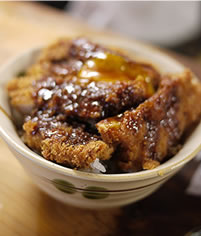

ドイツの魅力
蚤の市 Auer Dult
毎年4月終わりから5月初めにかけて開催される蚤の市・Auer Dult。
ミュンヘン中央駅から歩いて1時間ほどの場所にある、マリアヒルフ教会の周辺で行われます。中に入ると移動遊園地が目に入ります。観覧車やゴーカート、見ているだけで楽しい気持ちになります。この移動遊園地にはメリーゴーランドがあるのですが、それがなんと本物の馬！子どもから大人まで地元の人たちで大賑わい。
食器や雑貨、日用品、骨董品がずらずらっと並ぶ市場。ビアガーデンは大混雑！もちろん、ビールだけでなくワインも楽しめます。

パイプオルガンコンサート
ミュンヘンから1時間ほど移動するとパッサウという小さな町があります。そこにあるシュテファン大聖堂には、世界最大級のパイプオルガンがあります。お昼のコンサートでは30分ほどパイプオルガンの演奏を楽しむことができます。人気のため、時間に余裕を持ってチケット売り場まで行くことをお勧めします。